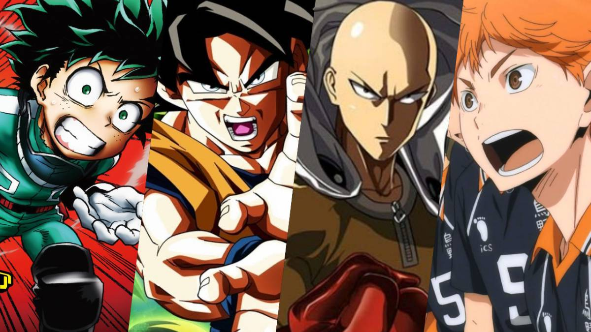

Anime, tan solo por ser dibujos animados podemos pensar “simples caricaturas para niños”, pero el mundo del anime va mucho más allá que caricaturas para menores (aunque claro está que atraen mucho su atención) también existen mucho animes para adultos, que pueden hablar de temas sádicos, intelectuales e incluso eróticos (Hentai).
Como ya hemos dicho, cada anime va dirigido a distinto público (receptor) en general, por ejemplo, la serie de anime Doraemon es para publico menor de 7 años aproximadamente, esto se debe a que los temas tratados aquí hace que los niños se sientan identificados con la problemática de los personajes o del personaje central.
Otro ejemplo es Saint Seiya que es una serie que trata temas más violentos y fantásticos, esta serie es atrayente para los jóvenes de 10 o 12 años en general.
Gantz, es una serie que es apta para adolescentes de 16 años o incluso adultos. En esta serie se abarcan temas muy violentos, sangrientos y subnormales, los personajes acá tienen formas de pensar muy peculiares, donde se ven envueltos en situaciones muy fuertes y de mucha muerte. Por tal razón en la mayoría de los países en que la han transmitido, han debido censurar una gran cantidad de escenas. Indagaremos ahora en los distintos tipos de anime según la edad del espectador y después según la temática del mismo.
Hoy en día la palabra anime se utiliza como referencia a los mangas animados en la televisión.

CLASES:
Géneros demográficos
| Género |
Descripción |
Ejemplos |
| Kodomo |
Anime enfocado a los niños.
|
Doraemon, Hamtaro
|
| Shonen |
Aniem enfocado hacia los adolescentes.
|
Dragon Ball, Naruto |
| Shojo |
Anime enfocado a las chicas adolescentes.
|
Candy Candy, Card Captor
|
| Seinen |
Anime enfocado hacia jóvenes y adultos.
|
Cowboy Bepop, Speed Grapher
|
| Josei |
Anime enfocado a mujeres jóvenes y adultas.
|
Nana, Paradise Kiss |
Clasificacion Por Generos
Genero |
Descripción |
Ejemplos |
| Maho Shojo |
Magical girl, chica-bruja con poderes magicos.
|
Little witch academia, yamada kun to 7 nin no majo
|
| Mecha |
Robots Gigantes
|
Code Geas, Evangelion
|
| Sentai |
Se refier a un grupo de superheróes |
One Punch Man, Power Ranger |
| Spokon |
Historias Deportivas |
Kuroko no Basket, Yuri On Ice, Hakyuu, Free |
| Post-apocaliptico |
La historia lleva un mundo devastado |
Shingeki no Kiojin, High School Of The Dead, Battle Angel |
| Meitantei |
Historia policiaca |
Detective Conan |
| Romance |
Historia de amor |
Yaoi, Yuri, Hentai,Harem, Magical Girlfriend |